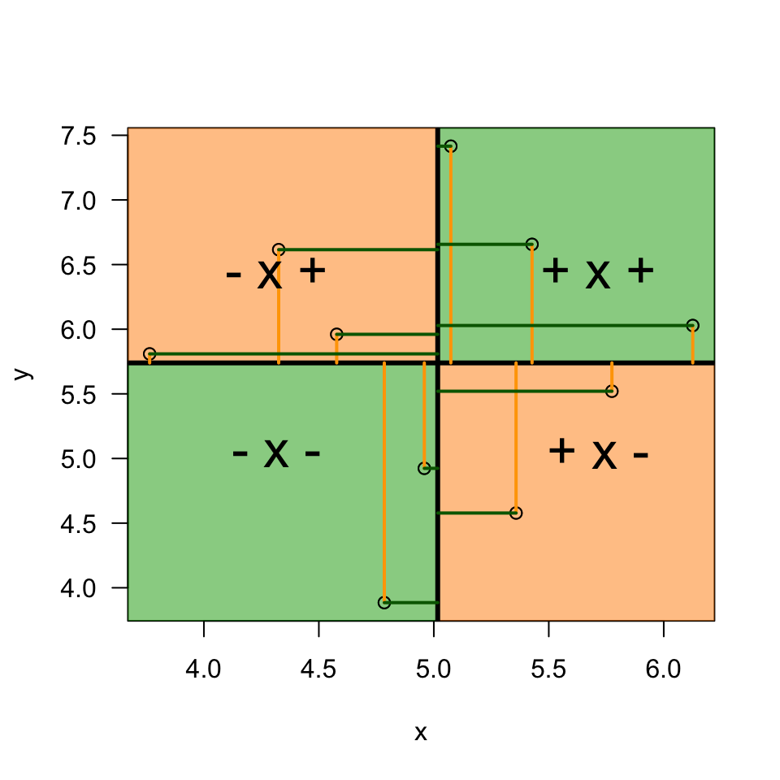
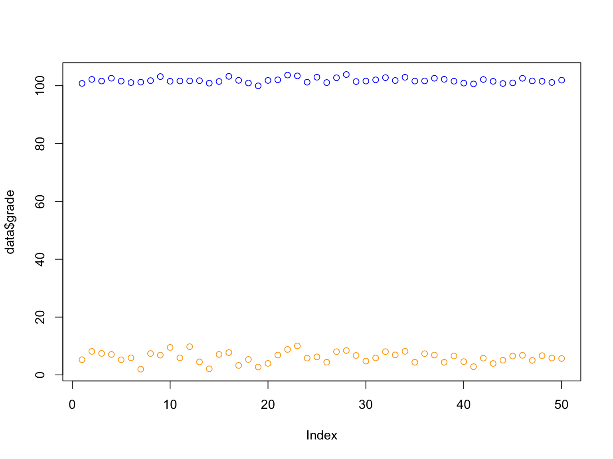
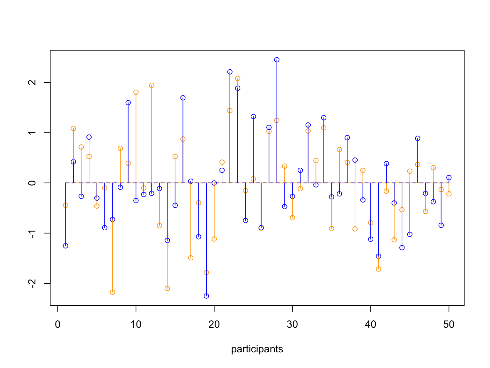
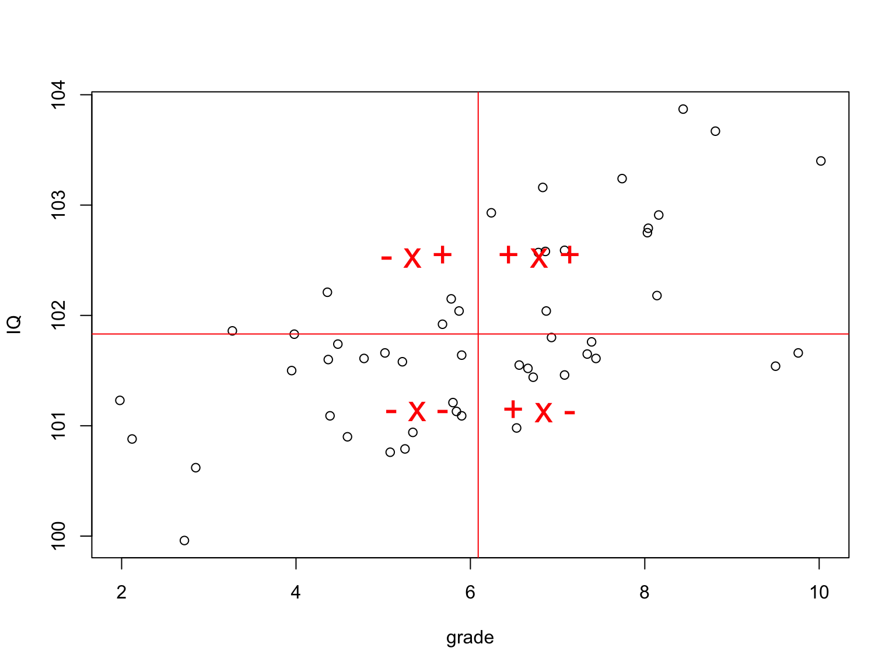
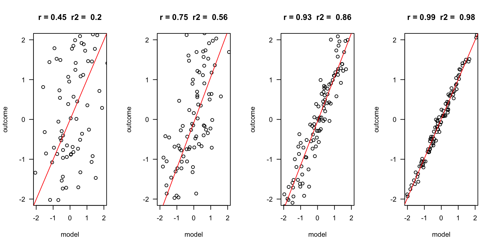
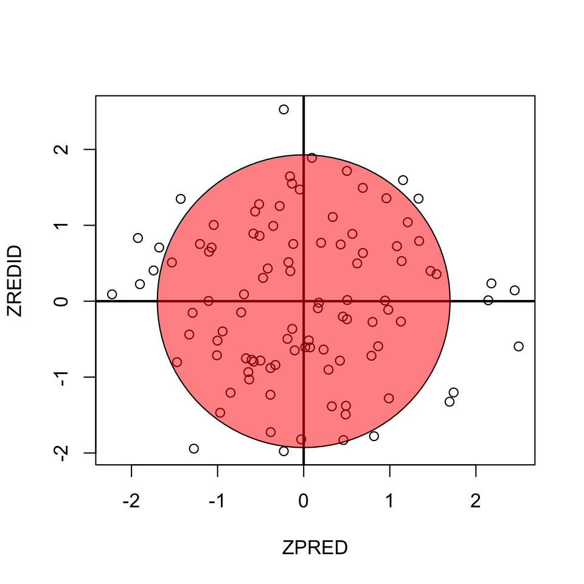
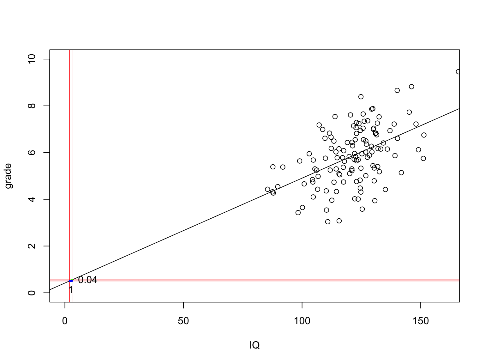
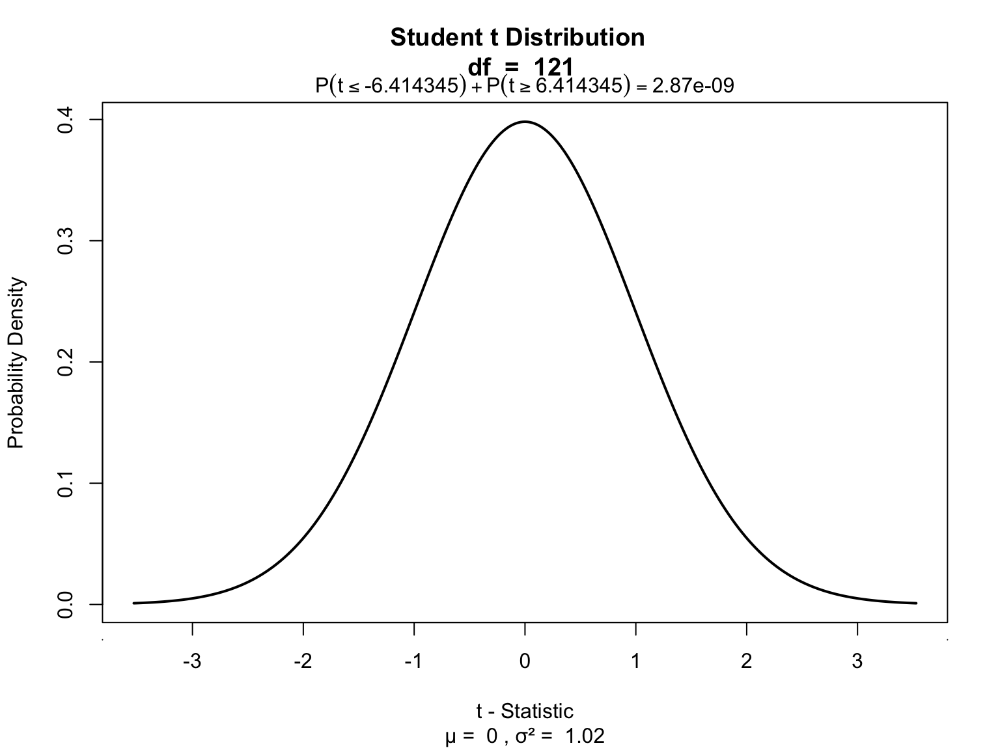
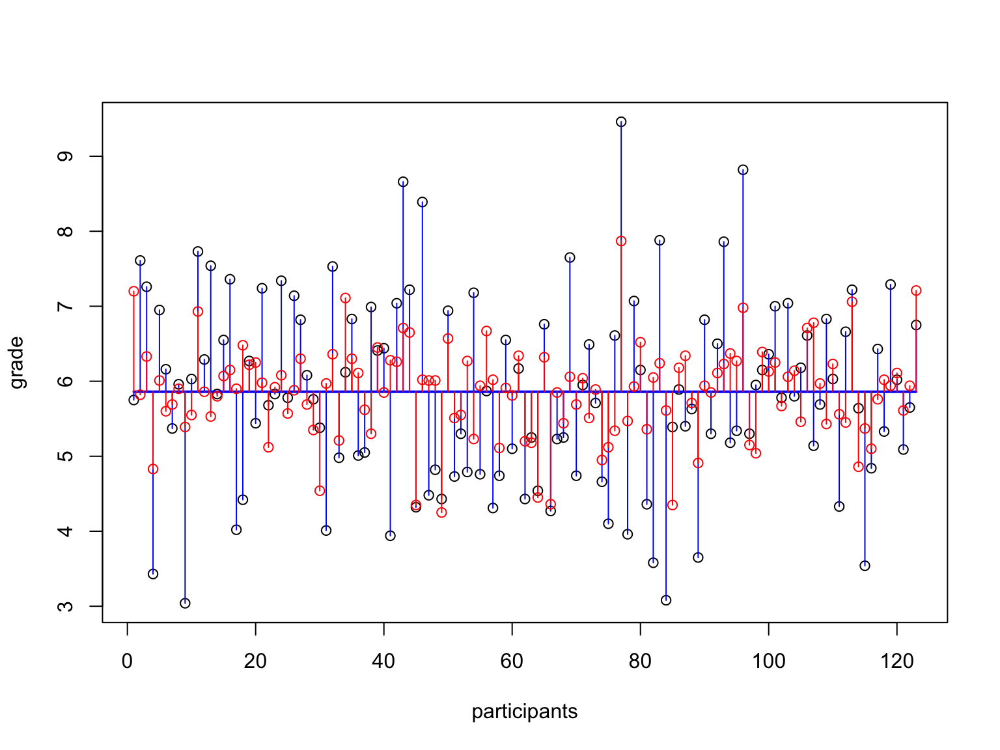
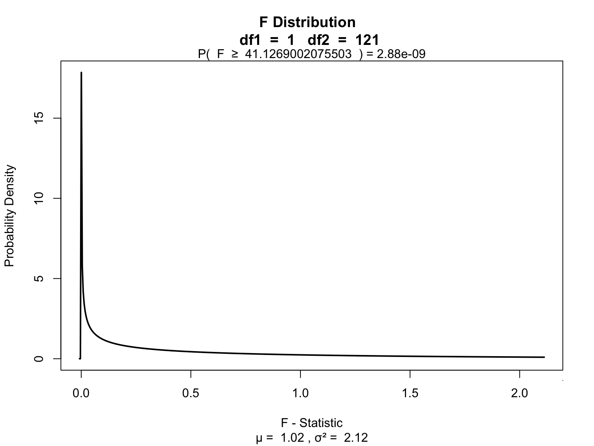

Correlation and Simple regression
Klinkenberg
4 nov 2021
Correlation
Pearson Correlation

In statistics, the Pearson correlation coefficient, also referred to as the Pearson’s r, Pearson product-moment correlation coefficient (PPMCC) or bivariate correlation, is a measure of the linear correlation between two variables X and Y. It has a value between +1 and −1, where 1 is total positive linear correlation, 0 is no linear correlation, and −1 is total negative linear correlation. It is widely used in the sciences. It was developed by Karl Pearson from a related idea introduced by Francis Galton in the 1880s.
Source: Wikipedia
PMCC
\[r_{xy} = \frac{{COV}_{xy}}{S_xS_y}\] Where \(S\) is sthe standard deviation and \(COV\) is the covariance.
\[{COV}_{xy} = \frac{\sum_{i=1}^N (x_i - \bar{x})(y_i - \bar{y})}{N-1}\]
Plot correlation
set.seed(565433)
x = rnorm(10, 5)
y = rnorm(10, 5)
plot(x, y, las = 1)
m.x = mean(x)
m.y = mean(y)
polygon(c(m.x,8,8,m.x),c(m.y,m.y,8,8), col = rgb(0,.64,0,.5))
polygon(c(m.x,0,0,m.x),c(m.y,m.y,0,0), col = rgb(0,.64,0,.5))
polygon(c(m.x,0,0,m.x),c(m.y,m.y,8,8), col = rgb(1,.55,0,.5))
polygon(c(m.x,8,8,m.x),c(m.y,m.y,0,0), col = rgb(1,.55,0,.5))
points(x,y)
abline(h = m.y, lwd = 3)
abline(v = m.x, lwd = 3)
segments(x, m.y, x, y, col = "orange", lwd = 2)
segments(x, y, m.x, y, col = "darkgreen", lwd = 2)
text(m.x+.7, m.y+.7, "+ x +", cex = 2)
text(m.x-.7, m.y-.7, "- x -", cex = 2)
text(m.x+.7, m.y-.7, "+ x -", cex = 2)
text(m.x-.7, m.y+.7, "- x +", cex = 2) \[(x_i - \bar{x})(y_i - \bar{y})\]
Guess the correlation

Simulate data
Explaining vairance

Standarize
\[z = \frac{x_i - \bar{x}}{{sd}_x}\]
data[, c('z.grade', 'z.IQ')] = scale(data[, c('grade', 'IQ')])
z.grade = data$z.grade
z.IQ = data$z.IQ
mean.z.grade = mean(z.grade, na.rm=T)
mean.z.IQ = mean(z.IQ, na.rm=T)
plot(z.grade,
ylim = summary(c(z.grade, z.IQ))[c('Min.','Max.')],
col = 'orange',
ylab = "", xlab="participants")
points(z.IQ, col='blue')
# Add mean lines
lines(rep(mean.z.grade, N), col='orange')
lines(rep(mean.z.IQ, N), col='blue', lt=2)
# Add vertical variance lines
segments(1:N, mean.z.grade, 1:N, z.grade, col='orange')
segments(1:N, mean.z.IQ, 1:N, z.IQ, col='blue')
Covariance
\[{COV}_{xy} = \frac{\sum_{i=1}^N (x_i - \bar{x})(y_i - \bar{y})}{N-1}\]
Correlation
\[r_{xy} = \frac{{COV}_{xy}}{S_xS_y}\]
## [1] 0.6207285## [1] 0.6207285## [1] 0.6207285## [1] 0.6207285## x y
## [1,] 1.0 1 1.0
## [2,] -1.0 -1 1.0
## [3,] -1.0 1 -1.0
## [4,] 0.0 1 0.0
## [5,] 0.5 1 0.5
## [6,] -0.5 1 -0.5
Significance of a correlation
\[t_r = \frac{r \sqrt{N-2}}{\sqrt{1 - r^2}} \\ {df} = N - 2\]
\[ \begin{aligned} H_0 &: t_r = 0 \\ H_A &: t_r \neq 0 \\ H_A &: t_r > 0 \\ H_A &: t_r < 0 \\ \end{aligned}\]
## t.r df
## [1,] 5.485195 48Visualize
One-sample t-test

Partial correlation
Venn diagram

## (polygon[GRID.polygon.1110], polygon[GRID.polygon.1111], polygon[GRID.polygon.1112], polygon[GRID.polygon.1113], polygon[GRID.polygon.1114], polygon[GRID.polygon.1115], text[GRID.text.1116], text[GRID.text.1117], text[GRID.text.1118], text[GRID.text.1119], text[GRID.text.1120], text[GRID.text.1121], text[GRID.text.1122], text[GRID.text.1123], text[GRID.text.1124], text[GRID.text.1125])Partial correlation
\[\LARGE{r_{xy \cdot z} = \frac{r_{xy} - r_{xz} r_{yz}}{\sqrt{(1 - r_{xz}^2)(1 - r_{yz}^2)}}}\]
motivation = data$motivation
cor.grade.IQ = cor(grade,IQ)
cor.grade.motivation = cor(grade,motivation)
cor.IQ.motivation = cor(IQ,motivation)
data.frame(cor.grade.IQ, cor.grade.motivation, cor.IQ.motivation)## cor.grade.IQ cor.grade.motivation cor.IQ.motivation
## 1 0.6207285 -0.1100721 0.2311468numerator = cor.grade.IQ - (cor.grade.motivation * cor.IQ.motivation)
denominator = sqrt( (1-cor.grade.motivation^2)*(1-cor.IQ.motivation^2) )
partial.correlation = numerator / denominator
partial.correlation## [1] 0.6682178Significance of parial correlation
One-sample t-test
## [1] 6.157636Regression (one predictor)
Regression
\[\LARGE{\text{outcome} = \text{model} + \text{error}}\]
In statistics, linear regression is a linear approach for modeling the relationship between a scalar dependent variable y and one or more explanatory variables denoted X. The case of one explanatory variable is called simple linear regression.
\[\LARGE{Y_i = \beta_0 + \beta_1 X_i + \epsilon_i}\]
In linear regression, the relationships are modeled using linear predictor functions whose unknown model parameters are estimated from the data.
Source: wikipedia
Outcome vs Model
error = c(2, 1, .5, .1)
n = 100
layout(matrix(1:4,1,4))
for(e in error) {
x = rnorm(n)
y = x + rnorm(n, 0 , e)
r = round(cor(x,y), 2)
r.2 = round(r^2, 2)
plot(x,y, las = 1, ylab = "outcome", xlab = "model", main = paste("r =", r," r2 = ", r.2), ylim=c(-2,2), xlim=c(-2,2))
fit <- lm(y ~ x)
abline(fit, col = "red")
}
Assumptions
A selection from Field:
- Sensitivity
- Homoscedasticity
Sensitivity
Outliers
- Extreme residuals
- Cook’s distance (< 1)
- Mahalonobis (< 11 at N = 30)
- Laverage (The average leverage value is defined as (k + 1)/n)

Homoscedasticity
- Variance of residual should be equal across all expected values
- Look at scatterplot of standardized: expected values \(\times\) residuals. Roughly round shape is needed.

Simulation
The data
Calculate regression parameters
\[{grade}_i = b_0 + b_1 {IQ}_i + \epsilon_i\]
Calculate \(b_1\)
\[b_1 = r_{xy} \frac{s_y}{s_x}\]
# Calculate b1
cor.grade.IQ = cor(grade,IQ)
sd.grade = sd(grade)
sd.IQ = sd(IQ)
b1 = cor.grade.IQ * ( sd.grade / sd.IQ )
b1## [1] 0.04489104Calculate \(b_0\)
\[b_0 = \bar{y} - b_1 \bar{x}\]
## [1] 0.4167131The slope
# Extra
plot(IQ,grade, xlim=c(0, 160), ylim=c(0,10))
abline(lm(grade~IQ))
abline(v=c(2,3),col='red')
abline(h=b0 + b1 * c(2, 3),col='red')
lines(c(3,3),c(b0 + b1 * 2,b0 + b1 * 3),col='green',lwd=3)
lines(c(2,3), rep(b0 + b1 * 2, 2),col='blue',lwd=3)
text(2.5, (b0 + b1 * 2),1, pos=1, cex=1)
text(3 , (b0 + b1 * 2.5),
round((b0 + b1 * 3)-(b0 + b1 * 2), 2),
pos=4,
cex=1)

Calculate t-values for b’s
\[t_{n-p-1} = \frac{b - \mu_b}{{SE}_b}\]
Where \(n\) is the number of rows, \(p\) is the number of predictors, \(b\) is the beta coefficient and \({SE}_b\) its standard error.
# Get Standard error's for b
fit <- lm(grade~IQ)
se = summary(fit)[4]$coefficients[,2]
se.b0 = se[1]
se.b1 = se[2]
cbind(se.b0, se.b1)## se.b0 se.b1
## (Intercept) 0.8542378 0.006998539## (Intercept)
## 0.4878187## IQ
## 6.414345P-values of \(b_0\)
\[\begin{aligned} t_{n-p-1} &= \frac{b - \mu_b}{{SE}_b} \\ df &= n - p - 1 \\ \end{aligned}\]
Where \(b\) is het beta coeficient \({SE}\) is the standard error of the beta coefficient, \(n\) is the number of subjects and \(p\) the nubmer of predictors.

P-values of \(b_1\)

Define regression equation
\[\widehat{grade} = {model} = b_0 + b_1 {IQ}\]
So now we can add the expected grade based on this model
Expected values
Let’s have a look
\(y\) vs \(\hat{y}\)
And lets have a look at this relation between expectation and reality

Error
The error / residual is the difference between the model expectation and reality
Model fit
The fit of the model is the amount of error, which can be viewed in the correlation (\(r\)).
## [1] 0.5035925Explained variance
## [1] 0.2536054Explained variance visually
# This is all the grade data
plot(grade,xlab='participants')
# With the mean
lines(1:n,rep(mean(grade),n),col='blue',lwd=2)
# The blue lines are the total variance, the deviation from the mean.
segments(1:n, grade, 1:n, mean(grade), col='blue')
# The model predicts the grade scores
points(1:n,model, col='red')
# The part of the variation that overlaps is the 'explained' variance.
segments(1:n, model, 1:n, mean(grade), col='red')
The part that does not overlap is therefore ‘unexplained’ variance. And because \(r^2\) is the explained variance, \(1 - r^2\) is the unexplained variance.
Test model fit
Compare model to mean Y (grade) as model
\[F = \frac{(n-p-1) r^2}{p (1-r^2)}\]
Where \({df}_{model} = n - p - 1 = N - K - 1\).
## [1] 41.11265Signal to noise
Given the description of explained variance, F can again be seen as a proportion of explained to unexplained variance. Also known as a signal to noise ratio.
df.model = p # n = rows, p = predictors
df.error = n-p-1
SS_model = sum((model - mean(grade))^2)
SS_error = sum((grade - model)^2)
MS_model = SS_model / df.model
MS_error = SS_error / df.error
F = MS_model / MS_error
F## [1] 41.1269SS_total = var(grade) * (n-1)
rbind(SS_total,
SS_model,
# Proportion explained variance
SS_model / SS_total,
r^2)## [,1]
## SS_total 191.0732000
## SS_model 48.4740000
## 0.2536933
## 0.2536054Visualize

End
Contact